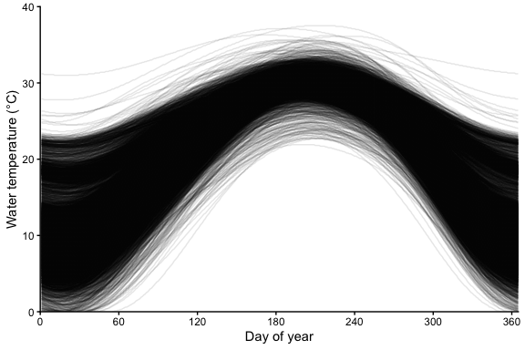
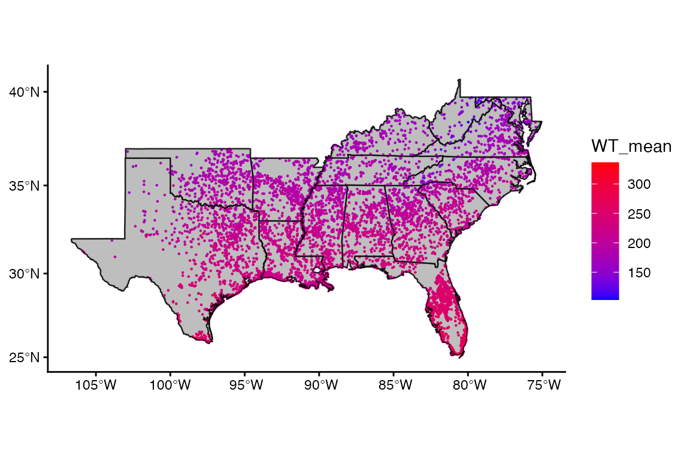
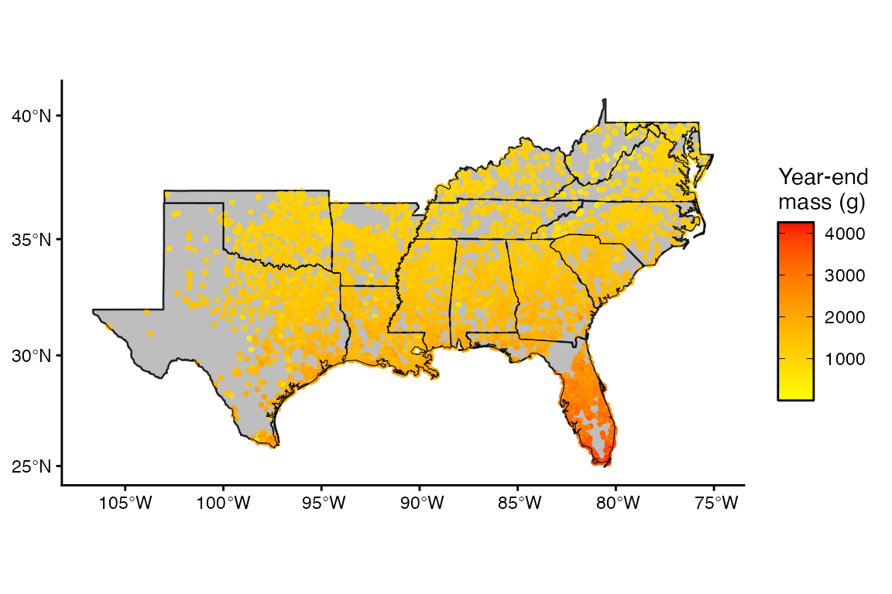
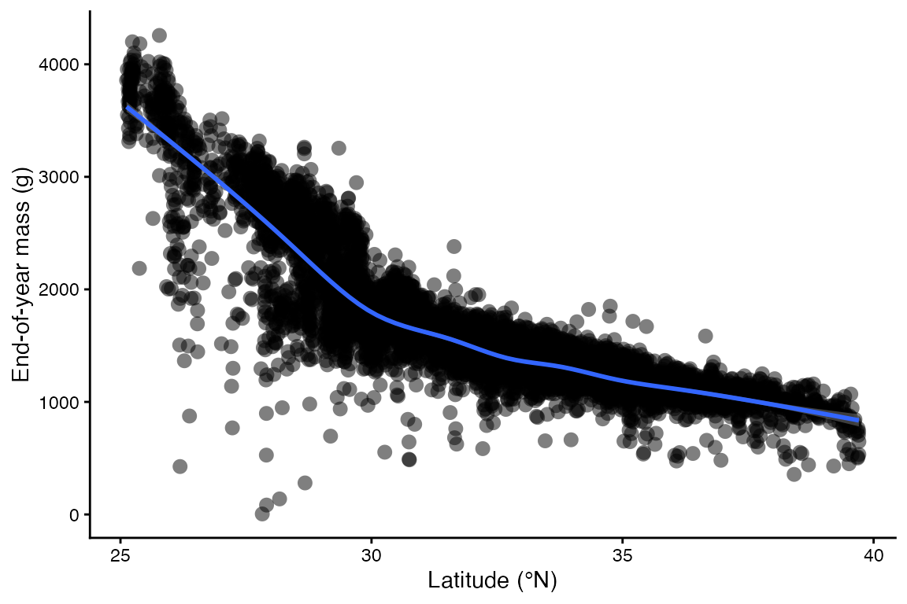
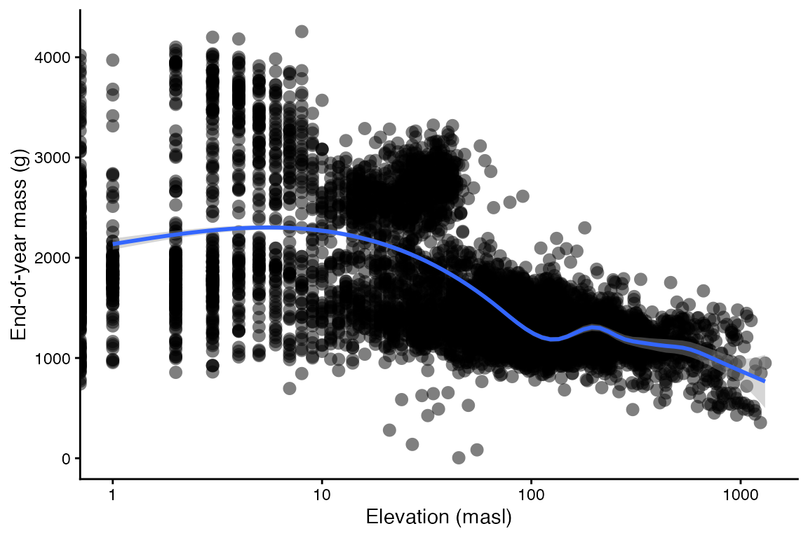
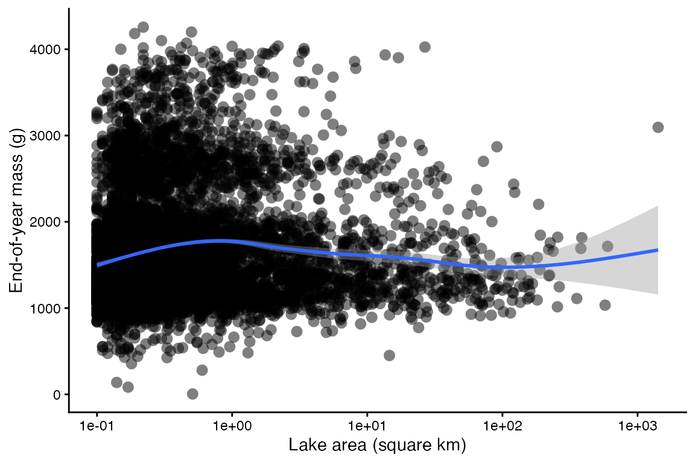
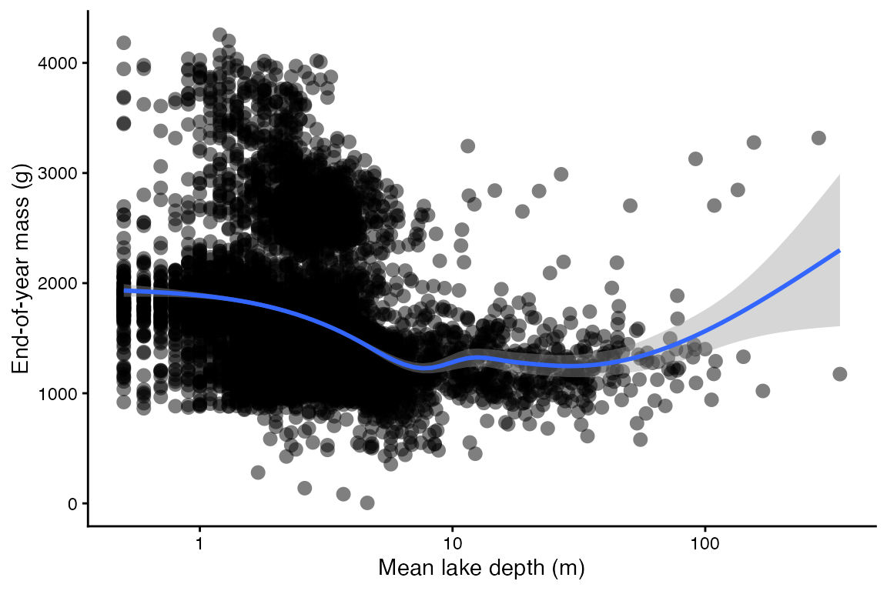

Mapping Largemouth bass
Mapping_LargemouthBass.RmdIn this vignette, you will:
- Explore spatial variation in the performance of Largemouth bass (Micropterus salmoides) in lakes across the southeastern United States.
- Use bioenergetics modeling to simulate individual performance metrics across 8,001 lakes (lentic habitat patches)
- Create maps showing spatially-contiguous variation in these performance metrics and drivers of this spatial variation (e.g., temperature).
First, install the fishyenergy package and load the library. Dependencies include reshape2, stringr, terra, sf, lubridate, and ggplot2.
remotes::install_github("bomeara/fishyenergy")
library(FishyEnergy)Next, load the intrinsic bioenergetics parameters of five example species. These parameters have been published by various authors since the 1980s and are available from Fish Bioenergetics 4.0 (FB4)
data(parms_fb4)Let’s retain only one focal species, Largemouth bass, and look at these data.
options(width = 500)
parms.micsal <- parms_fb4[parms_fb4$genus_species == "micropterus_salmoides",]
parms.micsal
#> genus_species LifeStage Source lwA lwB CEQ CA CB CQ CTO CTM CTL CK1 CK4 REQ RA RB RQ RTO RTM RTL RK1 RK4 SDA FA UA pred_ED
#> 2 micropterus_salmoides adult Rice et al. 1983 0.0226 2.781 2 0.33 -0.325 2.65 27.5 37 NA NA NA 1 0.008352 -0.355 0.0313 0.0196 0 0 1 0 0.15848 0.104 0.08817 4184The first column shows the Latin name in snake case. Other columns like lwA and lwB are the intercept and slope of the length-weight equation. Still other columns like CA and CB are the intercept and slope of the mass dependent consumption equation (a negative power law). There’s also specific dynamic action (i.e., the proportion of energy consumed allocated to the cost of digestion), predator energy density, and many other variables defined by Hanson et al. (1997).
Next, we need to load some parameters that potentially vary temporally. The dataframe has 365 rows representing each day of the year. There are five noteworthy columns (i.e., variables):
CP is the proportion of maximum consumption and decrease as prey quantity declines or as exploitative competition increases.
ACT is the activity multiplier where a value of zero would indicate no metabolic costs beyond being at rest. Maintaining position in a flowing stream, avoiding predators, pursuing prey, and engaging in reproductive behavior increase ACT.
The next two parameters (gsi_f and gsi_m) allow the user to model somatic growth of a reproductively mature fish that allocates some energy to gonadal tissue. Separate parameters are provided for females and males because the sexes invest different amounts of energy to their gonads–gsi_f and gsi_m, respectively. The default data assume a reproductively immature fish (i.e., gsi = 0).
Modifying prey energy density (prey_ED) over the year can simulate ontogenetic diet shifts or changes in prey quality. There are numerous published estimates of prey energy density for common prey items like invertebrates, fish, and so on.
options(width = 500)
data(parms_temporal_DEFAULT)
dim(parms_temporal_DEFAULT)
#> [1] 365 6
head(parms_temporal_DEFAULT)
#> date CP ACT gsi_f gsi_m prey_ED
#> 1 1/1/2025 1 1 0 0 3698
#> 2 1/2/2025 1 1 0 0 3698
#> 3 1/3/2025 1 1 0 0 3698
#> 4 1/4/2025 1 1 0 0 3698
#> 5 1/5/2025 1 1 0 0 3698
#> 6 1/6/2025 1 1 0 0 3698Let’s modify CP and ACT to more realistic values. Specifically, we will use CP = 0.82 and ACT = 1.69. These parameter values were validated using age-1 largemouth bass from Watts Bar Lake in East Tennessee, USA. See the Validation vignette for details.
options(width = 500)
parms_temporal_DEFAULT$CP = 0.82
parms_temporal_DEFAULT$ACT = 1.69
head(parms_temporal_DEFAULT)
#> date CP ACT gsi_f gsi_m prey_ED
#> 1 1/1/2025 0.82 1.69 0 0 3698
#> 2 1/2/2025 0.82 1.69 0 0 3698
#> 3 1/3/2025 0.82 1.69 0 0 3698
#> 4 1/4/2025 0.82 1.69 0 0 3698
#> 5 1/5/2025 0.82 1.69 0 0 3698
#> 6 1/6/2025 0.82 1.69 0 0 3698Let’s explore some lake temperature data modified from the open-source LakeTEMP dataset (Korver et al. 2024). In brief, this dataset provides monthly lake surface temperatures for 1,427,688 lakes throughout the world as well as some geographic (e.g., elevation above sea level) and bathymetric (e.g., lake depth) covariates for these lakes. In fishyenergy, we have extracted these monthly temperatures and covariates for 8,001 lakes in 15 southeastern US states plus Puerto Rico. We then used a generalized additive model fitted to monthly temperatures to interpolate temperatures to the daily resolution needed for bioenergetics modeling. Let’s load this dataset called temps_lake in fishyenergy.
The dataset has 8,001 rows each representing a different lake and 366 columns representing the unique lake ID (Hylak_id) followed by the 365 julian days.
options(width = 500)
data(temps_lake)
dim(temps_lake)
#> [1] 8001 366
head(temps_lake[,1:91])
#> Hylak_id julian001 julian002 julian003 julian004 julian005 julian006 julian007 julian008 julian009 julian010 julian011 julian012 julian013 julian014 julian015 julian016 julian017 julian018 julian019 julian020 julian021 julian022 julian023 julian024 julian025 julian026 julian027 julian028 julian029 julian030 julian031 julian032 julian033 julian034 julian035 julian036 julian037 julian038 julian039 julian040 julian041 julian042 julian043 julian044 julian045 julian046 julian047 julian048
#> 1 Hylak_id.0000069 192 191 191 191 190 190 190 190 189 189 189 189 189 188 188 188 188 188 188 188 188 188 188 189 189 189 189 189 190 190 190 191 191 191 192 192 192 193 193 194 194 195 196 196 197 197 198 199
#> 2 Hylak_id.0000800 66 65 65 64 63 63 62 61 61 60 60 59 59 59 58 58 58 57 57 57 57 57 57 57 57 57 57 57 57 57 58 58 58 59 59 60 60 61 61 62 62 63 64 64 65 66 67 68
#> 3 Hylak_id.0000801 56 55 54 53 53 52 51 51 50 50 49 49 48 48 47 47 47 47 46 46 46 46 46 46 46 46 47 47 47 47 48 48 49 49 50 50 51 51 52 53 54 55 55 56 57 58 59 60
#> 4 Hylak_id.0000803 85 84 83 82 81 80 79 78 77 76 76 75 74 73 73 72 71 71 70 70 69 69 69 68 68 68 67 67 67 67 67 67 67 67 67 67 67 67 67 68 68 68 69 69 70 70 71 71
#> 5 Hylak_id.0000805 75 74 73 72 71 70 69 68 67 66 65 64 64 63 62 61 61 60 59 59 58 58 58 57 57 57 56 56 56 56 56 56 56 56 56 56 56 56 56 57 57 57 58 58 59 59 60 61
#> 6 Hylak_id.0000806 45 44 44 43 42 41 40 39 39 38 37 37 36 35 35 35 34 34 34 33 33 33 33 33 33 33 33 33 33 34 34 34 35 35 36 36 37 37 38 39 40 40 41 42 43 44 45 46
#> julian049 julian050 julian051 julian052 julian053 julian054 julian055 julian056 julian057 julian058 julian059 julian060 julian061 julian062 julian063 julian064 julian065 julian066 julian067 julian068 julian069 julian070 julian071 julian072 julian073 julian074 julian075 julian076 julian077 julian078 julian079 julian080 julian081 julian082 julian083 julian084 julian085 julian086 julian087 julian088 julian089 julian090
#> 1 200 200 201 202 202 203 204 205 206 207 207 208 209 210 211 212 213 214 215 216 217 217 218 219 220 221 222 223 224 225 226 227 228 229 230 231 232 233 234 235 236 237
#> 2 69 70 70 71 72 74 75 76 77 78 79 80 82 83 84 86 87 88 90 91 92 94 95 97 98 100 101 103 104 106 107 109 110 112 114 115 117 118 120 122 123 125
#> 3 62 63 64 65 66 68 69 70 72 73 75 76 78 79 81 82 84 86 87 89 91 92 94 96 98 99 101 103 105 107 109 110 112 114 116 118 120 122 124 126 127 129
#> 4 72 72 73 74 74 75 76 77 78 79 79 80 81 82 84 85 86 87 88 89 91 92 93 94 96 97 99 100 101 103 104 106 107 109 111 112 114 116 117 119 121 122
#> 5 61 62 63 63 64 65 66 67 68 69 70 71 72 73 74 76 77 78 79 81 82 83 85 86 88 89 90 92 94 95 97 98 100 101 103 105 106 108 110 112 113 115
#> 6 47 48 50 51 52 53 55 56 57 59 60 62 63 65 66 68 70 71 73 75 76 78 80 82 83 85 87 89 91 93 94 96 98 100 102 104 106 108 110 112 114 116Let’s visualize the spatial and temporal variation in these temperature data. Each line is one of the 8,001 lakes.
library(reshape2)
temps_lake.long <- melt(temps_lake, id.vars = "Hylak_id", value.name = "WT_mean")
temps_lake.long$date <- as.numeric(gsub("julian","", temps_lake.long$variable))
library(ggplot2)
ggplot(NULL) + theme_classic() + theme(legend.position = "none") +
labs(x = "Day of year", y = "Water temperature (°C)") +
scale_x_continuous(expand = c(0,0), limits = c(0,365), breaks = seq(0,360,60)) +
scale_y_continuous(expand = c(0,0), limits = c(0,40), breaks = seq(0,40,10)) +
geom_line(aes(x = date, y = WT_mean / 10, group = Hylak_id), temps_lake.long, linewidth = 0.5, alpha = 0.1)
Let’s map the spatial variation in temperature.
temps_lake.mean <- aggregate(WT_mean ~ Hylak_id, temps_lake.long, FUN = mean)
data(envir_lake)
temps_lake.mean <- merge(x = temps_lake.mean, y = envir_lake, by = "Hylak_id")
library(sf)
vect.temps_lake.mean <- st_as_sf(temps_lake.mean, crs = "+proj=longlat +datum=WGS84", coords = c("center_long", "center_lat"))
library(terra)
#data(geogr_lake)
geogr_lake <- vect(system.file("extdata", "states_sdafs.shp", package="FishyEnergy")) #("K:\\COS\\TroiaFishEcology\\TroiaMatthew\\utsa_b\\UTSA_v01\\UTSA_research_v01\\project_BEM_package_v01\\for__use_data\\states_sdafs\\states_sdafs.shp")
geogr_lake <- st_as_sf(geogr_lake)
ggplot(NULL) + theme_classic() +
scale_color_gradient(low = "blue", high = "red") +
geom_sf(aes(), data = geogr_lake, size = 0.5, fill = "gray") +
geom_sf(aes(color = WT_mean), data = vect.temps_lake.mean, size = 0.5, shape = 16) +
geom_sf(aes(), data = geogr_lake, fill = NA, color = "black")
Run the bem_project function to grow a fish for n habitat patches. Be sure to set the is.raster argument to FALSE because the temperature input is in tabular form and not raster.
output.lakes <- bem_project(start_M2 = 454,
temperature = temps_lake,
parms.intrinsic = parms.micsal,
parms.temporal = parms_temporal_DEFAULT,
C_eq = 2,
R_eq = 1,
is.raster = FALSE)Output from bem_project is a list of length three.
- The first list element is the run time. The bem_project function, like the bem_validate function, takes some time to run and that time increases with the number of habitat patches.
output.lakes$run.time
#> [1] "Run time is 23.73 minutes for 8001 habitat patches"- The last two outputs are tabular. The first, year.end.perform, has a number of rows equal to the number of habitat patches. There are two columns representing the habitat patch ID and the simulated end-of-year mass (M2_cum).
options(width = 500)
head(output.lakes$year.end.perform)
#> patchID M2_end M2_dif M1_m01 M1_m02 M1_m03 M1_m04 M1_m05 M1_m06 M1_m07 M1_m08 M1_m09 M1_m10 M1_m11 M1_m12 M1_cold M1_warm K_min K_yday def_days
#> 1 Hylak_id.0000069 3095.503 581.8289 187283.3 242804.5 488011.8 742221.085 936440.1 875614.8 870556.4 1107780.0 1456433.3 1723368.4 1406908.48 1014625.1 187283.3 870556.4 0.8925071 365 0
#> 2 Hylak_id.0000800 1015.256 123.6247 -223363.7 -187088.3 -145873.3 -6240.192 258383.5 515587.6 607000.3 750784.2 838907.7 435271.4 -137205.87 -357868.6 -223363.7 607000.3 0.7176806 107 106
#> 3 Hylak_id.0000801 1033.946 127.7414 -230186.7 -191883.7 -143872.9 19662.329 302007.7 536111.6 629523.4 787655.4 847734.6 420784.9 -167279.81 -383764.6 -230186.7 629523.4 0.7174782 103 102
#> 4 Hylak_id.0000803 1199.465 164.1993 -210330.2 -184621.9 -150829.1 -6406.875 284787.1 530938.1 667133.9 811881.1 915614.0 704497.8 61462.05 -305101.9 -184621.9 667133.9 0.7221178 107 106
#> 5 Hylak_id.0000805 1094.130 140.9978 -220449.8 -192132.4 -162214.3 -31802.127 229435.6 490861.2 636609.7 776988.1 854784.7 605711.1 10346.67 -319836.4 -192132.4 636609.7 0.6992432 111 110
#> 6 Hylak_id.0000806 956.918 110.7749 -235380.7 -198924.8 -164688.6 -21413.710 256789.0 505718.2 564379.1 711167.0 823361.7 418151.5 -174735.41 -380215.3 -235380.7 564379.1 0.6888623 109 108- The other tabular output, daily.output, is a list with a number of elements equal to the number of habitat patches. Each element is dataframe with the same 365 rows and 43 columns produced by the bem_grow function.
options(width = 500)
head(output.lakes$daily.output[[1]])
#> date WT_mean pred_ED gsi_m gsi_f CP ACT prey_ED C1_ins C2_ins R1_ins R2_ins F1_ins F2_ins U1_ins U2_ins SDA1_ins SDA2_ins MS1_ins MS2_ins MG1_ins MG2_ins M1_ins M2_ins C1_cum C2_cum R1_cum R2_cum F1_cum F2_cum U1_cum U2_cum SDA1_cum SDA2_cum MS1_cum MS2_cum MG1_cum MG2_cum M1_cum M2_cum L_cum K
#> 1 julian001 19.2 4184 0 0 0.8 1.7 3698 0.000 0.00 0.000 0.00 0.000 0.000 0.000 0.000 0.000 0.000 0.000 0.000 0 0 0.000 0.000 0.000 0.00 0.000 0.00 0.000 0.000 0.000 0.000 0.000 0.000 0.00 454.000 0 0 0.00 454.000 35.25870 1.000000
#> 2 julian002 19.1 4184 0 0 0.8 1.7 3698 9.912 36654.52 1.328 18004.13 1.031 3812.070 0.874 3231.829 1.407 5204.872 6401.620 1.530 0 0 6401.620 1.530 9.912 36654.52 1.328 18004.13 1.031 3812.070 0.874 3231.829 1.407 5204.872 6401.62 455.530 0 0 6401.62 455.530 35.25870 1.039246
#> 3 julian003 19.1 4184 0 0 0.8 1.7 3698 9.935 36737.86 1.331 18043.24 1.033 3820.737 0.876 3239.177 1.411 5216.705 6417.996 1.534 0 0 6417.996 1.534 19.847 73392.38 2.658 36047.38 2.064 7632.808 1.750 6471.006 2.818 10421.577 12819.61 457.064 0 0 12819.61 457.064 35.30138 1.038968
#> 4 julian004 19.1 4184 0 0 0.8 1.7 3698 9.957 36821.32 1.334 18082.41 1.036 3829.417 0.878 3246.536 1.414 5228.556 6434.399 1.538 0 0 6434.399 1.538 29.804 110213.70 3.992 54129.79 3.100 11462.225 2.628 9717.542 4.232 15650.134 19254.01 458.602 0 0 19254.01 458.602 35.34408 1.038690
#> 5 julian005 19.0 4184 0 0 0.8 1.7 3698 9.876 36521.13 1.332 18065.00 1.027 3798.198 0.871 3220.068 1.402 5185.931 6251.940 1.494 0 0 6251.940 1.494 39.680 146734.83 5.324 72194.78 4.127 15260.423 3.499 12937.610 5.634 20836.065 25505.96 460.096 0 0 25505.96 460.096 35.38679 1.038305
#> 6 julian006 19.0 4184 0 0 0.8 1.7 3698 9.898 36601.41 1.335 18102.94 1.029 3806.547 0.873 3227.147 1.405 5197.330 6267.450 1.498 0 0 6267.450 1.498 49.577 183336.25 6.659 90297.72 5.156 19066.970 4.371 16164.757 7.040 26033.395 31773.40 461.594 0 0 31773.40 461.594 35.42821 1.038036Mapping simulated performance across habitat patches.
perf.lakes <- output.lakes$year.end.perform
colnames(perf.lakes) <- c("Hylak_id", "M2_cum")
perf.lakes <- merge(x = perf.lakes, y = envir_lake, by = "Hylak_id")
vect.perf.lakes <- st_as_sf(perf.lakes, crs = "+proj=longlat +datum=WGS84", coords = c("center_long", "center_lat"))
ggplot(NULL) + theme_classic() +
scale_colour_gradient("Year-end\nmass (g)",
low = "yellow", high = "red",
guide = guide_colorbar(frame.colour = "black", ticks.colour = "black")) +
geom_sf(aes(), data = geogr_lake, size = 0.5, fill = "gray") +
geom_sf(aes(color = M2_cum), data = vect.perf.lakes, size = 1, shape = 16) +
geom_sf(aes(), data = geogr_lake, fill = NA, color = "black")
What is the relationship between environmental variables and largemouth bass performance? Let’s plot and see. Each point represents a different lake in the southeastern US.
ggplot(NULL) + theme_classic() + theme(legend.position = "none") +
labs(x = "Latitude (°N)", y = "End-of-year mass (g)") +
geom_point(aes(x = center_lat, y = M2_cum), perf.lakes, shape = 16, size = 3, alpha = 0.5) +
geom_smooth(aes(x = center_lat, y = M2_cum), perf.lakes, method = "gam")
ggplot(NULL) + theme_classic() + theme(legend.position = "none") +
labs(x = "Elevation (masl)", y = "End-of-year mass (g)") +
scale_x_log10() +
geom_point(aes(x = Elevation, y = M2_cum), perf.lakes, shape = 16, size = 3, alpha = 0.5) +
geom_smooth(aes(x = Elevation, y = M2_cum), perf.lakes, method = "gam")
ggplot(NULL) + theme_classic() + theme(legend.position = "none") +
labs(x = "Lake area (square km)", y = "End-of-year mass (g)") +
scale_x_log10() +
geom_point(aes(x = Lake_area, y = M2_cum), perf.lakes, shape = 16, size = 3, alpha = 0.5) +
geom_smooth(aes(x = Lake_area, y = M2_cum), perf.lakes, method = "gam")
ggplot(NULL) + theme_classic() + theme(legend.position = "none") +
labs(x = "Mean lake depth (m)", y = "End-of-year mass (g)") +
scale_x_log10() +
geom_point(aes(x = Depth_avg, y = M2_cum), perf.lakes, shape = 16, size = 3, alpha = 0.5) +
geom_smooth(aes(x = Depth_avg, y = M2_cum), perf.lakes, method = "gam")